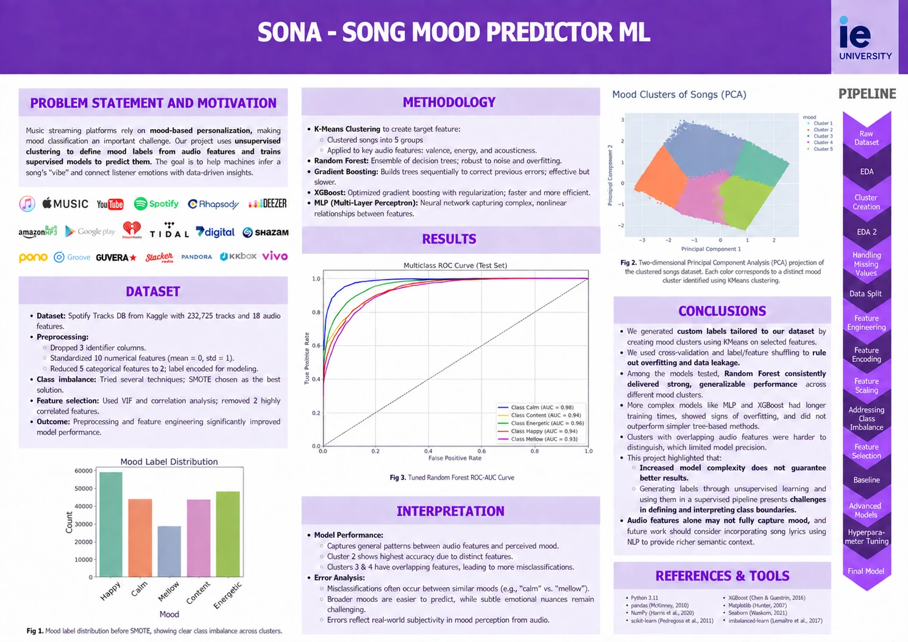

AI & ML2025
Sona
A machine-learning study that reads a song’s audio features and predicts its mood.
Languages
- Python
Frameworks & tools
- scikit-learn
- XGBoost
- imbalanced-learn
- pandas
- NumPy
- Matplotlib
- Seaborn
- Jupyter
The research report
Final poster
The final research poster: dataset, pipeline, model comparison and conclusions on one page.
The challenge
Streaming platforms lean on mood to personalise what people hear, but the source dataset carries no mood at all: 232,725 Spotify tracks described only by audio features such as valence, energy and tempo.
The idea
Create the labels first, then learn them. Cluster the catalogue into five moods with KMeans on valence, energy and acousticness, and train supervised models to recover those moods from audio features alone.
The build
Python and scikit-learn carry the pipeline: one-hot encoding and standardisation, VIF and correlation checks to drop redundant features, interaction terms such as danceability × loudness, SMOTE to balance the classes, and RandomizedSearchCV to tune logistic regression, random forest, gradient boosting, XGBoost and an MLP.
What came out of it
The tuned random forest predicts mood with 76.3 percent test accuracy and ROC AUC between 0.93 and 0.98 per class, ahead of the heavier MLP and XGBoost models. Calm and mellow stay the hardest pair to separate, which suggests audio features alone do not carry the whole story and lyrics are the missing signal.
More technical detail in the project repository. Implementation notes ↗